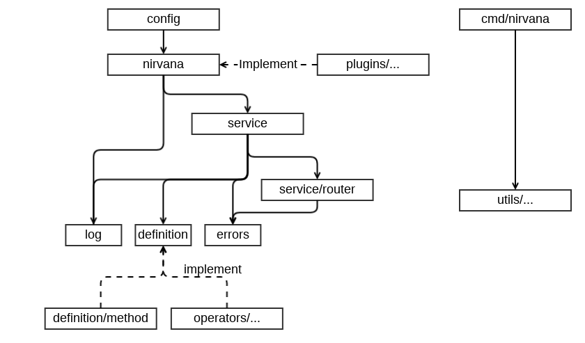

准备工作
开发工具介绍
- golang：https://golang.org/dl/
- dep：https://github.com/golang/dep
- gometalinter：https://github.com/alecthomas/gometalinter
一般情况下，我们使用最新版本的 golang 进行开发，但是需要保证两个 golang 大版本的兼容性。即使用 1.10.x 开发的情况下，需要保持对 1.9.x 的兼容性。 另外 Nirvana 只使用 dep 进行依赖管理，不要使用其他依赖管理工具对 vendor 进行任何更新操作。并且所有的依赖需要放置在根目录的 vendor 中，不能在任何子目录下使用 vendor。 除了常规的 go test 测试以外，还需要使用 gometalinter 进行代码检查，gometalinter 的配置文件在根目录的 config.json 中。
工作流程
在 githuh 上 Fork Nirvana 到自己的账户下，然后下载源码到本地开发目录中：
$ cd $GOPATH/src
$ mkdir -p github.com/caicloud/
$ cd github.com/caicloud/
$ git clone git@github.com:{your account}/nirvana.git
在完成修改并提交到自己的 repo 之后，通过 github PR 的形式向 Nirvana 提交代码。
框架设计概览
Nirvana 框架的设计核心思想是：隔离 API 定义和业务逻辑实现
也就是在使用框架的过程中，用户的业务函数的表现形式与其他普通函数没有差别。基于此，框架中的每个组件和工具包都不应该侵入用户的业务逻辑。如果存在必须要业务逻辑作出处理的功能，也应当以接口的形式提供，并且允许用户自行扩展。
Nirvana 包之间的依赖关系： 
- 其中 log 与 errors 是基础包，分别负责日志基础接口和错误处理基础接口。
- definition 包包含 Nirvana 框架的 API 定义以及一些相关的工具方法。作为框架的基础，这个包不能依赖其他任何包。
- definition/method 帮助用户把实例方法转换为 definition 函数。请参考 方法包。
- operators 中包含了两个组件功能实现了 converters 和 validators，用于 API 参数的类型转换和数据验证。
- service/router 包实现了基于前缀树的路由和中间件功能。
- service 包实现了框架 API 路由和处理的所有功能。
- nirvana 包实现了 API Server 以及插件化功能。
- plugins 中包含了许多实现了 nirvana 插件接口的插件。
- config 包实现了 Nirvana Command 功能，并提供了从 flags，环境变量，配置文件中读取配置的能力。这个包也是用户使用 Nirvana 的入口包。
- utils 包包含多个工具用于 API 生成，客户端代码生成，项目结构生成。
- cmd/nirvana 是 Nirvana 的主要命令，利用 utils 包帮助用户快速构建项目。
在后续的文档中，会逐步介绍每个包的设计方法和主要代码逻辑。